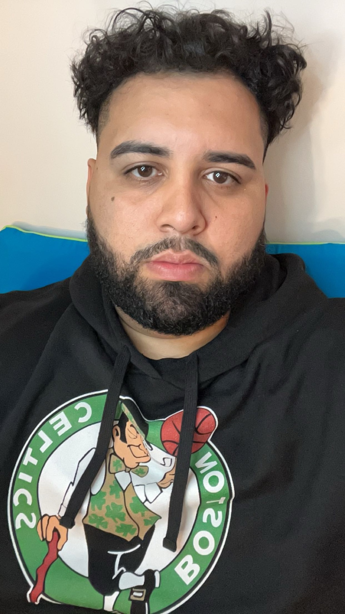

Kevin Canales

Summary
Highly motivated professional with a talent to handle fast-paced environments. Comfortable interacting
with all levels with the organization and public. Very reliable, trustworthy, excellent listener, and
responsible. Fast learner, willing to learn new skills and looks forward to new experiences.
Skilled in math and enjoy learning new things. I'm also patient and capable of handling any
situation.
Education
- Computer Science: Bachelors Degree
New York Institute of Technology -New York, NY (2015-2019)
Work Expereince
ASSISTANT TEAM LEADER, SUNRISE CREDIT SERVICES (BANK OF AMERICA) 2017 - Present
- Act as a liaison between our clients and the company
- Documented consumer contact on systems of record
- Handle reports and logs required by our clients using excel and word
- Ethically handling private data
Skills
- Judgment and Decision Making
- Critical Thinking
- Computer knowledge with Microsoft
- • Bilingual: Fluent in English and Spanish
Contact Me